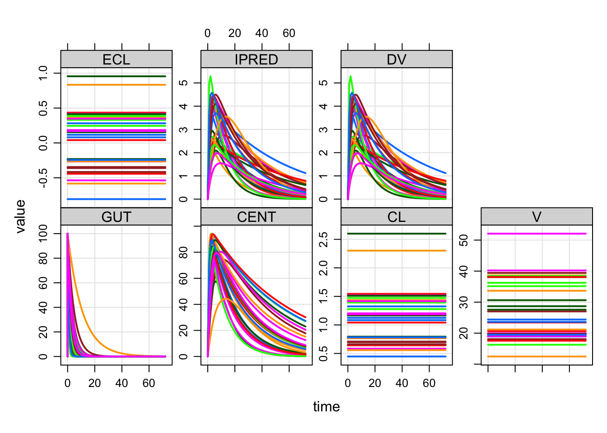

I was an Emacs user for a long time and thought I’d never give it up. But like a lot of other people, Rstudio grew on me and I use it for all my R, C++ and Rcpp work. It just works well.
When I write mrgsolve models, I typically save the code to a file with .cpp extension (e.g. pkmodel.cpp) so that I get nice syntax highlighting that Rstudio provides. One thing that bugs me about this setup is that Rstudio naturally thinks all the code in pkmodel.cpp is C++ code. But for mrgsolve models, only part of the code is C++. Other parts are R or just other syntax that we made up. This means the auto-formatting that Rstudio does doesn’t always work that great.
There are a couple of ways to make this less-irritating. First, you can use brackets for code blocks like this
rather than this
I think this helps a bit. You could also save your model to pkmodel.txt rather than pkmodel.cpp. You will lose all of the C++ conveniences but Rstudio won’t try to auto-format your code. This might not be a great solution either.
Another way to deal with this is to write your model in Rmarkdown format. This is new in version 0.9.1 and will probably need some tweaking. But I’m generally happy with the way it’s working so far.
The models run the same regardless of how you code them. But in the Rmarkdown input format, writing the code might be a little more natural. Also, consistent the the Rmarkdown / literate programming philosophy, you can document your model right as you code the model, but with structured markdown input.
For example you can now load this model
This is just a pop-PK model. You can take a closer look at the code here.

But it’s written in Rmd format
. ---
. title: "Test Rmd model spec"
. output: mrgsolve:::document
. ---
.
. ```{R setup, echo=FALSE}
. knitr::opts_chunk$set(eval=FALSE)
. ```
.
. # Parameters
. ```{param}
. TVKA = 0.5, TVCL = 1, TVV = 24, WT=70
. ```
.
. # OMEGA
. ```{omega}
. @labels ECL EV EKA
. 0.3 0.1 0.5
. ```
.
. # SIGMA
. ```{sigma}
. 0
. ```
.
. # Main block
. ```{main}
. double CL = exp(log(TVCL) + 0.75*log(WT/70) + ECL);
. double V = exp(log(TVV) + log(WT/70) + EV );
. double KA = exp(log(TVKA) + EKA);
. ```
.
. # Model
. ```{pkmodel}
. cmt = "GUT CENT", depot = TRUE
. ```
.
. # Table
. ```{table}
. capture IPRED = CENT/V;
. capture DV = IPRED*exp(EPS(1));
. ```
.
. # Outputs
. ```{capture}
. CL V ECL
. ```At the top of the document, there is regular yaml front matter, with a title (and optionally date, author etc). I have also included output which is set to mrgsolve:::document. The ::: indicates that document is not exported from the mrgsolve namespace. But using this output lets you knit this document in Rstudio (with the knit button) and you will get some html output. This just renders the code into a nice format (with all the comments and section headers you include in regular old Rmarkdown format). The mrgsolve:::document output type defines all sorts of engines like param and cmt and main and ode etc. These are block names like you would write in the original input specification ($PARAM and $CMT etc). So only code in backticks with an engine will be handled as proper model code, the rest is discarded. There are absolutely no differences in how the code itself is handled with either the Rmd input format or the traditional input format. The only difference is the code used to mark the end of one block and the start of another block.
If you want to write (and evaluate) some R code, use the R engine.
The only way to properly process a file written like this is if it has the extension .Rmd or .rmd. So only use those extensions if you have written your model with the Rmarkdown block delimiters.
mrgsolve: mrgsolve.github.io | metrum research group: metrumrg.com